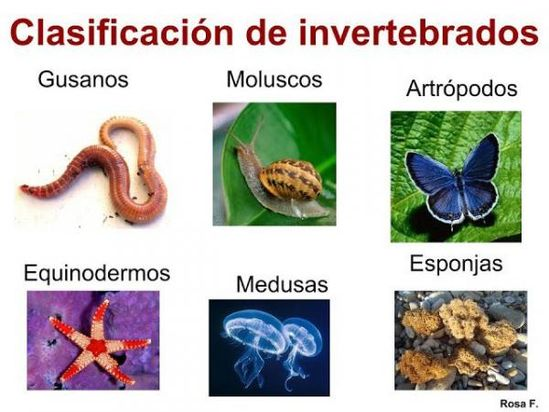

Los animales invertebrados son todos aquellos organismos multicelulares que pertenecen al reino Animalia que no poseen no poseen columna
vertebral. No realizan fotosíntesis, por lo que dependen de otros organismos (plantas y animales) para obtener energía.
Características de los animales invertebrados
-El sistema circulatorio puede ser abierto, con un reservorio de sangre amplio (como en los artrópodos y moluscos) y un sistema cerrado,
con arterias y venas, como en las lombrices. La circulación puede ser por difusión.
-Se pueden alimentar por filtración de micropartículas (como las esponjas), por masticación de macropartículas (como los cefalópodos) o
a través de fluidos (como los endoparásitos).
-Algunos invertebrados poseen un exoesqueleto, una cubierta rígida que limita el crecimiento, como en los insectos.
-La reproducción puede ser asexual, como en la hidras, o sexual como en los nemátodos e insectos.
